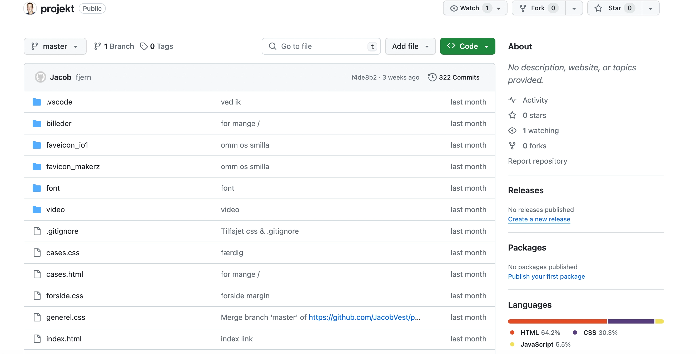

Tema - 5
Grundlæggende Indhold
Om tema 5
I tema 5 fik vi en grundlæggende forståelse for videoproduktion, herunder præproduktionen, optagelsen og postproduktionen. Dette tema startede med et videoprojekt, hvor vi i grupper af to skulle interviewe og filme en person med en passion. Vi valgte at interviewe en fra klassens papfar, hvis passion var at samle på plader. Den næste fase involverede et virksomhedsprojekt, hvor vi i grupper af fire skulle re-designe en eksisterende virksomheds hjemmeside.
Vi blev også introduceret til Tech and Story Lab samt de tilgængelige redskaber og værktøjer og hvordan man anvender dem. Derudover lærte vi at benytte forskellige programmer, herunder Premiere Pro, til at klippe videoer. Vi fik også kendskab til at bruge Adobe Audition til lydredigering og samspillet med Premiere Pro.
Hvad har jeg lært?
- At anvende Adobe Premiere pro og Audition.
- Forståelse for diverse redskaber og udstyr fra Tech og story lab
- At anvende github repository
- At lave en trelloboard
- At få en forståelse for BERT-test
- Forståelse af forskellige filformater, herunder wav, mp4, mp3, jpeg, png og h-264
Afleveringer
Processen for 05.02.01 Virksomhedssite
Klippeopgaver og videosite
I dette emne startede vi med at få nogle klippeopgaveøvelser, hvor vi blev introduceret til Premiere Pro. Her fik vi tildelt given indhold og skulle klippe videoer af Carhartt, der skulle vare et minut og tilpasses ekstern lyd, som vi skulle redigere i Adobe Audition. Hertil lærte vi også om B-rolls, som er små klip, der er med til at fastholde seeren til at forblive i videoen.
I næste opgave skulle vi i par af to finde en person der havde en passion for noget og interviewe personen. Her lærte vi også om, hvilke spørgsmål der var åbne og lukkede. Jeg var sammen med Sara, og vi valgte at interviewe hendes papfar, der havde en passion for at samle på plader. Vi filmede interviewet med et kamera og optog lyden via en mikrofon, der var tilsluttet vores telefon og gennem Røde Reporter. Vi startede med et establishing shot samt en titel. Videoen skulle indeholde fem klip med tre forskellige framings, og minimum 4 stillbilleder (baggrundsbillede, portrætbillede, højformat og bredformat). Derefter skulle vi individuelt klippe videoen sammen, til kun at skulle vare et minut, da det var et One Minute Wonder.
Jeg klippede videoen sammen og forkortede den ned til 1 minut, og ved hjælp af b-rolls, gjorde videoen mere levende. Jeg tilføjede også royalty-free musik og uploadede filmen på YouTube ved hjælp af YouTube embed-metoden. Til sidst oprettede jeg et videosite med videoen og uploadede alle billederne, som vi havde taget.
Martin Fessel

Virksomhedssite start
Vi skulle i grupper af fire, finde en virksomhed, der både havde en fysisk lokation og en hjemmeside. Vi valgte virksomheden Makerz, som godt kunne trænge til et re-design af deres hjemmeside. Vores design process startede med at besøge virksomheden og have en samtale med dem, for at forstå deres ønsker til hjemmesiden.
Efter samtalen interviewede vi indehaveren, Marius, og tog nogle billeder, som vi skulle bruge til hjemmesiden. Derfra udviklede vi et styletile og moodboard både for deres eksisterende hjemmeside og vores nye design, for at få en idé om det ønskede udtryk. Baseret på dette lavede vi i fællesskab en wireframe og prototype, som vi kunne gå efter, når vi skulle kode sitet.
Marius Thorbjørner
Moodboard
Style Tile
Sitemap
BERT- og Lighthouse-test
Ud fra vores færdige design, lærte vi hvordan vi kunne udføre en BERT-test, hvilket vi gjorde på både deres eksisterende site og det nye site og derefter sammenlignede vi resultaterne. En BERT-test står for Bipolær Emotional Respons Test, hvor der er to yder punkter, hvor man kan vurderer om man eksempelvis synes sitet er intimiderende eller imødekommende, eller midtimellem. Formålet var at se, om den nye hjemmeside blev opfattet som mere brugervenlig i forhold til den gamle, som var vores mål. Det samme gjorde vi med en lighthouse test.
Vi konkluderede at den nye side var mere imødekommende, mere overskuelig og mere navigerbar i forhold til deres gamle site, som folk synes var lettere uoverskuelig, ikke så navigerbar og mere intimiderende. Besvarelserne viste også at den gamle site ikke rigtig passede sammen med deres brand identitet, hvilket også var Maker eget synspunkt. Det nye site passede bedre på dem, og dette viste besvarelserne også. Generelt scorede lighthouse-testen også bedre på den nye site end den gamle, så den klarede sig overordnet set bedre i de udførte tests.
Lighthouse test
Bert test
Github
CSS
Kode og GitHub
Til sidst gik vi i gang med at kode hjemmesiden, hvor vi lærte at få oprettet et repository. Vi lærte hertil om forskellen på Git og GitHub, hvor Git er et versionsstyringssystem, hvorimod Github er en webbaseret platform, hvor man kan gemme sit git-repository og samarbejde med andre. I vores tilfælde var det ideelt, så vi kunne følge med i, hvad de andre lavede. Hver af os fik tildelt en side, som vi kunne arbejde på individuelt og rette i henadvejen. Vi anvendte push/pull-funktionerne til Github, så vi kunne se, hvordan det gik de andre og hvilke ændringer de lavede.
Vi begyndte at kode hjemmesiden ud fra Makerz ønsker om, hvordan den skulle se ud. Vi kodede en side hver, hvor jeg havde ansvaret for "Om os"-siden. CSS'en blev opdelt, så vi havde separate CSS-filer til hver side samt en generel fil for at gøre det mere overskueligt.
På billedet til venstre kan man se et eksempel på CSS'en for 'Om os' siden for vores virksomhedssite. Som man kan se er den responsiv, da jeg har brugt en media query for at definere hvordan hjemmesiden skulle se ud, når skærmen er 768px eller mere, det vil sige for desktop. Jeg har defineret nogle div'elementer hvor eksempelvis "grid_omos", er en grid med tre kolonner, Man kunne også have valgt at skrive "grid-template-columns: repeat(3, 1fr);. Deruover har den en gap på 5%, som er mellemrummet i grid'et, og en margin på 6%, som definerer marginen omkring griddet.